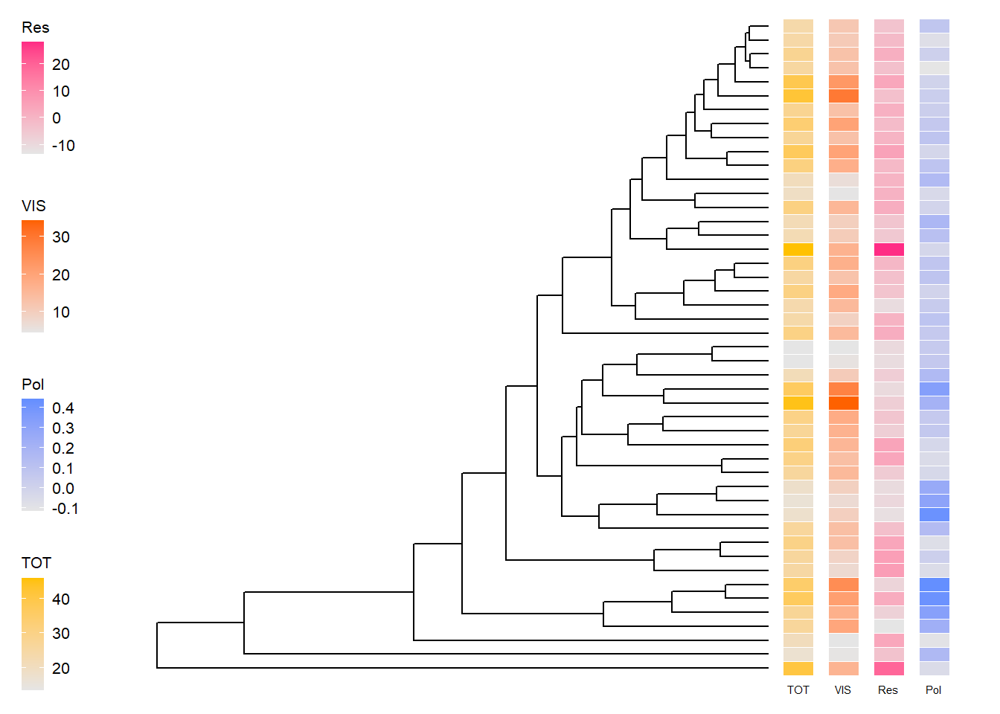
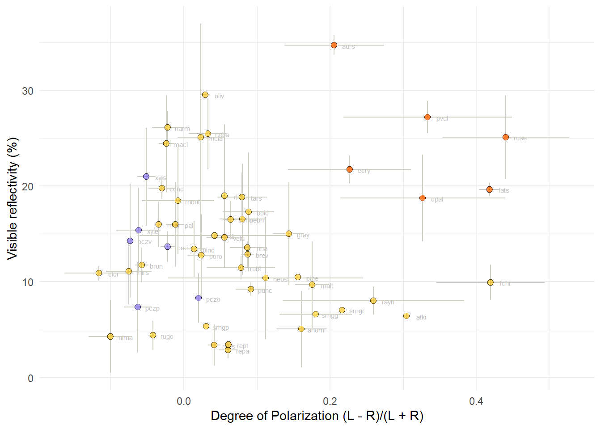
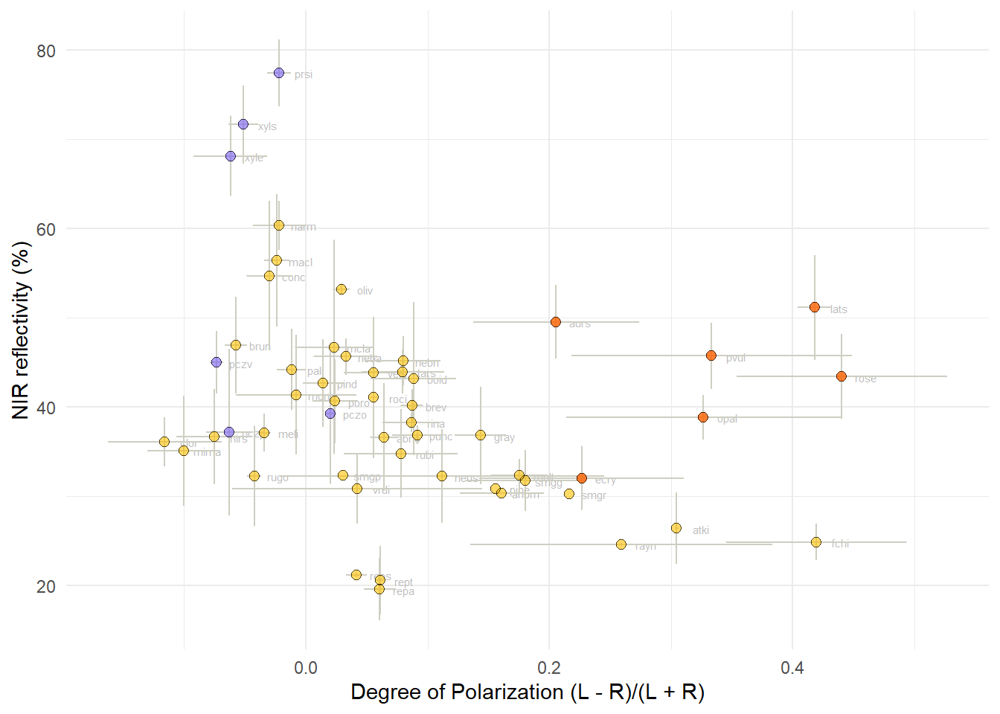
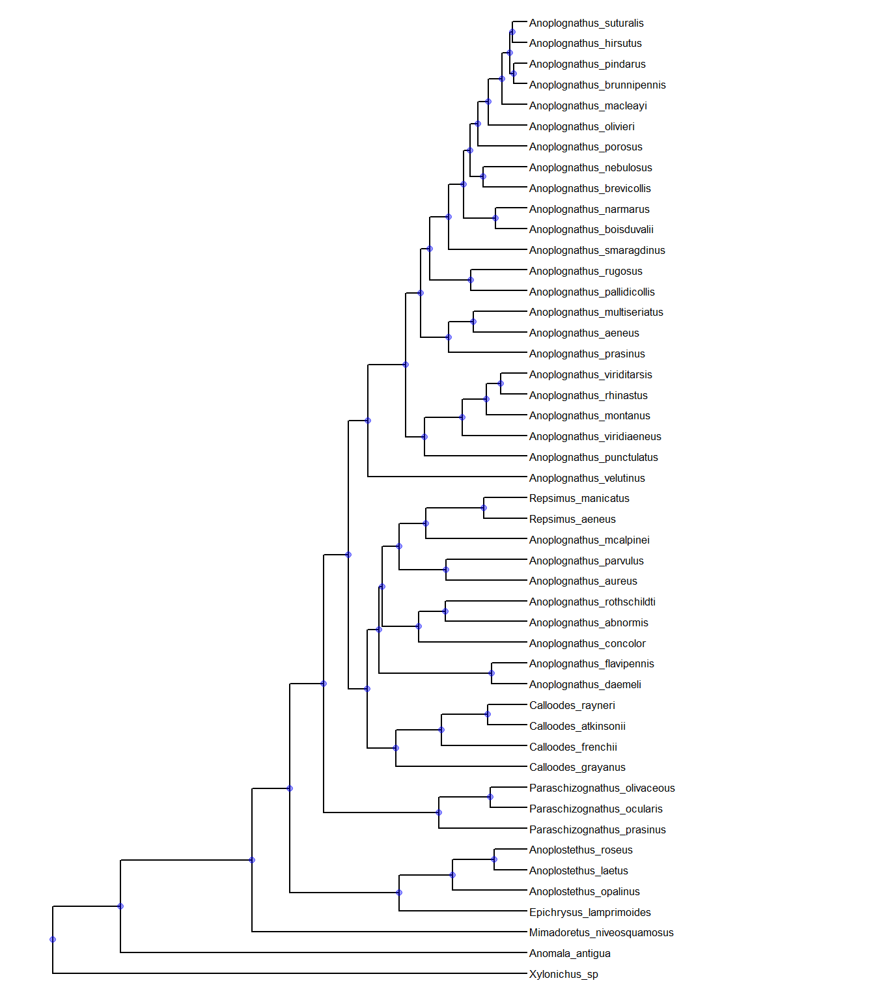
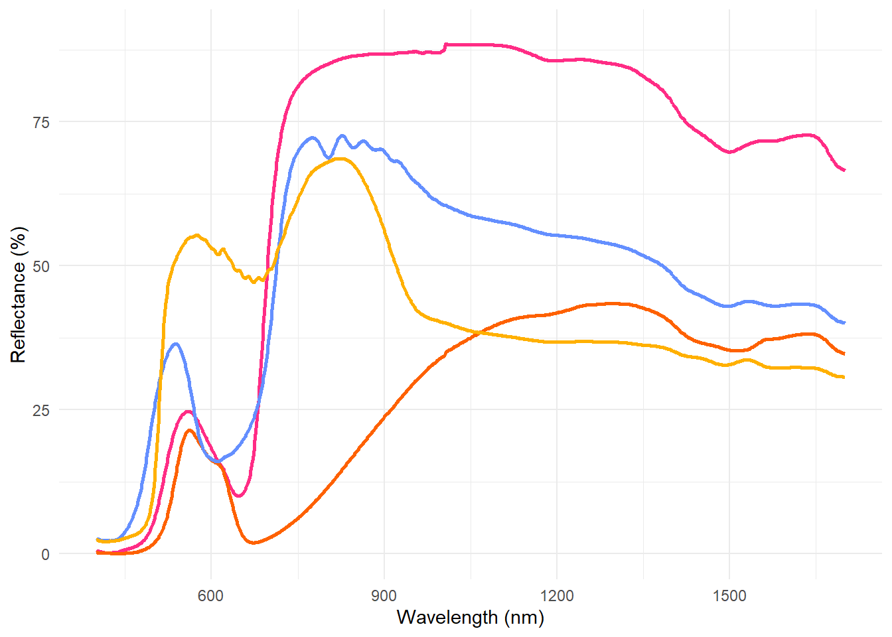

Libraries
source("./MacroEcol_1_Libraries.R")
library(matrixStats)Reflectance <- read.csv("../Data/FromCode/Reflectance_PData.csv")[-1]Polarization and NIR in the tree
Data
RPDataAgg <- read.csv("../Data/FromCode/PolarzElytraRefl.csv")[-1]
RPDAgg1 <-
RPDataAgg %>%
dplyr::select(-ind, -spp) %>%
dplyr::select(phylogeny_name, everything()) %>%
dplyr::group_by(phylogeny_name) %>% # group
dplyr::summarise(across(everything(), list(mean))) %>%
select(1,9) %>%
arrange(phylogeny_name)
Cons1agg <- read.csv("../Data/FromCode/ConsolidatedReflectivitySpp.csv")[-1] %>%
arrange(phylogeny_name) %>%
mutate (Pol = RPDAgg1$ElytrPol_1)
# Convert to a data frame for the comparative.data function
Cons1agg <- as.data.frame(Cons1agg)
head(Cons1agg)## phylogeny_name TOT VIS NIR Res size PC1 PC2
## 1 Anomala_antigua 17.23732 4.54861 28.27315 -3.4550833 1.7660 -1.662963 -1.9015325
## 2 Anoplognathus_abnormis 27.27081 16.53003 36.64233 -6.8717882 1.5755 -1.983450 0.1161986
## 3 Anoplognathus_aeneus 22.10221 10.40414 32.27222 -5.2159832 3.1125 -1.903878 0.4191886
## 4 Anoplognathus_aureus 44.93754 34.33124 54.20353 -6.8212959 1.7140 -3.122363 -0.4118618
## 5 Anoplognathus_boisduvalii 31.14445 17.30305 43.21203 -1.0624889 2.6054 -1.635325 -0.9220386
## 6 Anoplognathus_brevicollis 27.43900 12.86929 40.14934 0.2362219 2.5140 -1.145208 -3.6269193
## FRS Pol
## 1 -6.924027 0.16096972
## 2 -11.233399 0.06430368
## 3 -9.121189 0.11204259
## 4 -12.509174 0.20560559
## 5 -5.481693 0.08846901
## 6 -3.852648 0.08712699# Modify to make it compatible with tree tips
ConsAgg<- as.data.frame(Cons1agg) # create new data frame
rownames(ConsAgg) <- ConsAgg[, 1] # make species the row names
ConsAgg <- ConsAgg[, 2:length(ConsAgg)] # eliminate spp name (redundant)
# Separate data frames
TOTdf <- ConsAgg %>% dplyr::select(TOT)
VISdf <- ConsAgg %>% dplyr::select(VIS)
Resdf <- ConsAgg %>% dplyr::select(Res)
Poldf <- ConsAgg %>% dplyr::select(Pol)# Phylogeny
trees <- ape::read.tree("../Data/XMAS_mat2b_bst2ef_set23nn2_pinct.nwk")# read the tree
MCCtree.raw <-
ape::read.nexus("../Data/xmas_mat2b_bst2ef_set23nn2_pinct_med.tre")
# Prune extra spp in the tree, not contain in the test sample
species.MCC <- as.data.frame(unique(Cons1agg$phylogeny_name))
# Convert to "row names" (required for following steps)
row.names(species.MCC) <- species.MCC[, 1]
# Make sure the names in data set and tree match
temp.MCC <- name.check(MCCtree.raw, species.MCC)
# This step would be neccesary if the tips had been different.
# MCCtree <- drop.tip(MCCtree.raw, temp.MCC$tree_not_data)
# Not used in our case.
# Instead, changed the name
MCCtree <- MCCtree.rawAdd traits
# create a MCC tree without tip names for the plot
tree_only <- ggtree(MCCtree, layout = "rectangular")
# create heat map columns
# Note: log transforms increase contrast for visualization purposes
# Add TOTAL reflectivity
p0 <- gheatmap(tree_only, (TOTdf),
width = 0.05, low = "gray90", high = "#ffc100",
font.size = 2,
colnames_position = "bottom", colnames_angle = 0,
colnames_offset_x = 0, colnames_offset_y = -0.5,
legend_title = "TOT"
)
p1.scale <- p0 + new_scale_fill() # add new scale for second variable
# Add VIS
p1 <- gheatmap(p1.scale, (VISdf),
offset = 1.5, # to avoid overlapping with p1
width = 0.05, low = "gray90", high = "#fe6100",
font.size = 2,
colnames_position = "bottom", colnames_angle = 0,
colnames_offset_x = 0, colnames_offset_y = -0.5,
legend_title = "VIS"
)
p2.scale <- p1 + new_scale_fill() # add new scale for third variable
# Add NIR
p2 <- gheatmap(p2.scale, (Resdf),
offset = 3, # to avoid overlapping with p1
width = 0.05, low = "gray90", high = "#ff2c85",
font.size = 2,
colnames_position = "bottom", colnames_angle = 0,
colnames_offset_x = 0, colnames_offset_y = -0.5,
legend_title = "Res"
)
# Add polarisation
p3.scale <- p2 + new_scale_fill() # add new scale for third variable
# Add NIR
p3 <- gheatmap(p3.scale, (Poldf),
offset = 4.5, # to avoid overlapping with p1
width = 0.05, low = "gray90", high = "#648fff",
font.size = 2,
colnames_position = "bottom", colnames_angle = 0,
colnames_offset_x = 0, colnames_offset_y = -0.5,
legend_title = "Pol"
)
p3 +
theme(legend.position = 'left',
legend.background = element_rect(),
legend.key = element_blank(), # removes the border
legend.key.size = unit(0.4, 'cm'), # sets overall area/size of the legend
legend.text = element_text(size = 8), # text size
title = element_text(size = 8))
Light reflectance PGLS in multiple trees
TOTmumo <- read.csv("../Data/FromCode/MuTPglsResultsTOT.csv")[-1]
VISmumo <- read.csv("../Data/FromCode/MuTPglsResultsVIS.csv")[-1]
NIRmumo <- read.csv("../Data/FromCode/MuTPglsResultsNmo.csv")[-1]
Resmumo <- read.csv("../Data/FromCode/MuTPglsResultsRes.csv")[-1]
FRSmumo <- read.csv("../Data/FromCode/MuTPglsFRSultsFRS.csv")[-1]
FinTotM <- HPDinterval(as.mcmc(TOTmumo))
FinVisM <- HPDinterval(as.mcmc(VISmumo))
FinNirM <- HPDinterval(as.mcmc(NIRmumo))
FinResM <- HPDinterval(as.mcmc(Resmumo))Assemble a summary table
rvTOTl <- as.character(
round(as.numeric(c(
FinTotM[1,1],FinTotM[3,1],FinTotM[4,1],FinTotM[6,1],
FinTotM[7,1],FinTotM[9,1],"NA","NA",
FinTotM[10,1],FinTotM[12,1],
FinTotM[13,1],FinTotM[15,1])),3))
rvTOTu <- as.character(
format(round(as.numeric(c(
FinTotM[1,2],FinTotM[3,2],FinTotM[4,2],FinTotM[6,2],
FinTotM[7,2],FinTotM[9,2],"NA","NA",
FinTotM[10,2],FinTotM[12,2],
FinTotM[13,2],FinTotM[15,2])),3),nsmall=3))
rvVISl <- as.character(
round(as.numeric(c(
FinVisM[1,1],FinVisM[3,1],FinVisM[4,1],FinVisM[6,1],
FinVisM[7,1],FinVisM[9,1],"NA","NA",
FinVisM[10,1],FinVisM[12,1],
FinVisM[13,1],FinVisM[15,1])),3))
rvVISu <- as.character(
format(round(as.numeric(c(
FinVisM[1,2],FinVisM[3,2],FinVisM[4,2],FinVisM[6,2],
FinVisM[7,2],FinVisM[9,2],"NA","NA",
FinVisM[10,2],FinVisM[12,2],
FinVisM[13,2],FinVisM[15,2])),3),nsmall=3))
rvNIRl <- as.character(
format(round(as.numeric(c(
FinNirM[1,1],FinNirM[3,1],FinNirM[4,1],FinNirM[6,1],
FinNirM[7,1],FinNirM[9,1],FinNirM[10,1],FinNirM[12,1],
FinNirM[13,1],FinNirM[15,1], FinNirM[16,1],FinNirM[18,1]
)),3),nsmall=3))
rvNIRu <- as.character(
format(round(as.numeric(c(
FinNirM[1,2],FinNirM[3,2],FinNirM[4,2],FinNirM[6,2],
FinNirM[7,2],FinNirM[9,2],FinNirM[10,2],FinNirM[12,2],
FinNirM[13,2],FinNirM[15,2], FinNirM[16,2],FinNirM[18,2]
)),3),nsmall=3))
rvResl <- as.character(
format(round(as.numeric(c(
FinResM[1,1],FinResM[3,1],FinResM[4,1],FinResM[6,1],
FinResM[7,1],FinResM[9,1],"NA","NA",
FinResM[10,1],FinResM[12,1],
FinResM[13,1],FinResM[15,1])),3),nsmall=3))
rvResu <- as.character(
format(round(as.numeric(c(
FinResM[1,2],FinResM[3,2],FinResM[4,2],FinResM[6,2],
FinResM[7,2],FinResM[9,2],"NA","NA",
FinResM[10,2],FinResM[12,2],
FinResM[13,2],FinResM[15,2])),3),nsmall=3))
rvTOTi<-paste(rvTOTl,rvTOTu, sep = " ; ")
rvVISi<-paste(rvVISl,rvVISu, sep = " ; ")
rvNIRi<-paste(rvNIRl,rvNIRu, sep = " ; ")
rvResi<-paste(rvResl,rvResu, sep = " ; ")
rvVISi[1] <- cell_spec(rvVISi[1],bold = TRUE, color="#367D91")
rvVISi[2] <- cell_spec(rvVISi[2],bold = TRUE, color="#B2B9BF")
rvVISi[5] <- cell_spec(rvVISi[5],bold = TRUE, color="#D40481")
rvVISi[6] <- cell_spec(rvVISi[6],bold = TRUE)
rvVISi[9] <- cell_spec(rvVISi[9],bold = TRUE, color="#367D91")
rvVISi[10] <- cell_spec(rvVISi[10],bold = TRUE, color="#B2B9BF")
rvNIRi[3] <- cell_spec(rvNIRi[3],bold = TRUE, color="#D40481")
rvNIRi[4] <- cell_spec(rvNIRi[4],bold = TRUE)
rvNIRi[7] <- cell_spec(rvNIRi[7],bold = TRUE, color="#D40481")
rvNIRi[8] <- cell_spec(rvNIRi[8],bold = TRUE)
rvNIRi[11] <- cell_spec(rvNIRi[11],bold = TRUE, color="#D40481")
rvNIRi[12] <- cell_spec(rvNIRi[12],bold = TRUE)
rvResi[3] <- cell_spec(rvResi[3],bold = TRUE, color="#D40481")
rvResi[4] <- cell_spec(rvResi[4],bold = TRUE)
rvResi[11] <- cell_spec(rvResi[11],bold = TRUE, color="#D40481")
rvResi[12] <- cell_spec(rvResi[12],bold = TRUE)
Predictor <- c("PC1","PC1 p-val" ,
"PC2", "PC2 p-val",
"Size", "Size p-val",
"VIS", "VIS p-val",
"PC1:size", "PC1:size p-val",
"PC2:size", "PC2:size p-val")
Resultspgls <- data.frame(Predictor,
"TOT" = rvTOTi,
"VIS" = rvVISi,
"NIR" = rvNIRi,
"Res" = rvResi)
Resultspgls %>%
kbl(align ="c", escape = FALSE) %>%
kable_classic() %>%
add_indent(c(1, 3, 5, 7, 9)) | Predictor | TOT | VIS | NIR | Res |
|---|---|---|---|---|
| PC1 | -7.355 ; -4.786 | -7.737 ; -5.307 | 0.869 ; 3.144 | -0.400 ; 1.709 |
| PC1 p-val | 0.056 ; 0.248 | 0.017 ; 0.093 | 0.404 ; 0.808 | 0.642 ; 0.999 |
| PC2 | -2.871 ; 1.017 | -8.333 ; -5.344 | 10.375 ; 15.124 | 9.176 ; 13.822 |
| PC2 p-val | 0.605 ; 1.000 | 0.029 ; 0.166 | 0.000 ; 0.023 | 0.001 ; 0.037 |
| Size | 4.106 ; 7.896 | 6.08 ; 8.428 | -5.348 ; -1.774 | -4.036 ; -0.568 |
| Size p-val | 0.039 ; 0.307 | 0.008 ; 0.053 | 0.145 ; 0.599 | 0.266 ; 0.854 |
| VIS | NA ; NA | NA ; NA | 1.113 ; 1.219 | NA ; NA |
| VIS p-val | NA ; NA | NA ; NA | 0.000 ; 0.000 | NA ; NA |
| PC1:size | 2.237 ; 3.326 | 2.388 ; 3.364 | -1.253 ; -0.152 | -0.684 ; 0.373 |
| PC1:size p-val | 0.039 ; 0.221 | 0.014 ; 0.082 | 0.439 ; 0.925 | 0.689 ; 1.000 |
| PC2:size | -0.489 ; 1.083 | 1.939 ; 3.163 | -5.888 ; -3.974 | -5.328 ; -3.477 |
| PC2:size p-val | 0.614 ; 1.000 | 0.041 ; 0.195 | 0.001 ; 0.026 | 0.001 ; 0.042 |
Prepare data
RPData<- read.csv("../Data/FromCode/PolarzElytraRefl.csv")[-1]
ToPlotPolbsp <-
RPData %>%
dplyr::select(-phylogeny_name) %>%
dplyr::mutate("spp" = substr(ind, 1, 4)) %>%
dplyr::select(-1) %>%
dplyr::group_by(spp) %>%
dplyr::summarise(
meanAll = mean(R_ALL),
meanVIS = mean(R_VIS),
meanNIR = mean(R_NIR),
meanRes = mean(Res),
meanPol = mean(ElytrPol),
meanSize = mean(size),
sdAll = sd(R_ALL),
sdVIS = sd(R_VIS),
sdNIR = sd(R_NIR),
sdRes = sd(Res),
sdPol = sd(ElytrPol),
sdSize = sd(size)
)
ToPlotPolbsp <- as.data.frame(ToPlotPolbsp)
rownames(ToPlotPolbsp) <- ToPlotPolbsp$spp
# Create subset excluding the special cases (different mechanisms)
nospecialcasesspp <-
ToPlotPolbsp %>%
dplyr::filter(spp != "ecry" &
spp != "opal" &
spp != "lats" &
spp != "rose" &
spp != "pvul" &
spp != "aurs" &
spp != "xyls" &
spp != "xyle" &
spp != "pczo" &
spp != "pczp" &
spp != "pczv" &
spp != "prsi" )
# Create a subset with only the species with a bilayered mechanism
WhiteUnderlay <-
ToPlotPolbsp %>%
dplyr::filter(spp == "xyls" |
spp == "xyle" |
spp == "pczo" |
spp == "pczp" |
spp == "pczv" |
spp == "prsi")
# subset the species with white and gold appearance
#(pottentially different mechanism)
WhiteAndGold <-
ToPlotPolbsp %>%
dplyr::filter(spp == "opal" |
spp == "ecry" |
spp == "lats" |
spp == "rose" |
spp == "pvul" |
spp == "aurs" ) Plot for VIS
ggplot(data = ToPlotPolbsp, aes(x = meanPol, y = meanVIS),
size = 2.2, alpha = 0.6, colour = "white") +
geom_text(
label=rownames(ToPlotPolbsp),
nudge_x = 0.02, nudge_y = -0.04,
col="gray", size=2
) +
# error bars
geom_errorbar(aes(
ymin = meanVIS - sdVIS,
ymax = meanVIS + sdVIS),
col = "#cecec2"
) +
geom_errorbarh(aes(
xmin = meanPol - sdPol,
xmax = meanPol + sdPol
),
col = "#cecec2"
) +
# Almost all species
geom_point(data = nospecialcasesspp, aes(x = meanPol, y = meanVIS),
size = 2.2, alpha = 0.6, colour = "#ffc100") +
geom_point(data = nospecialcasesspp, aes(x = meanPol, y = meanVIS),
size = 2.2, pch = 21, colour = "black", alpha = 0.7) +
# White underlay
geom_point(data = WhiteUnderlay, aes(x = meanPol, y = meanVIS),
size = 2.2, alpha = 0.6, colour = "#785ef0") +
geom_point(data = WhiteUnderlay, aes(x = meanPol, y = meanVIS),
size = 2.2, pch = 21, colour = "black", alpha = 0.7) +
# White and Gold polarized
geom_point(data = WhiteAndGold, aes(x = meanPol, y = meanVIS),
size = 2.2, alpha = 0.8, colour = "#fe6100") +
geom_point(data = WhiteAndGold, aes(x = meanPol, y = meanVIS),
size = 2.2, pch = 21, colour = "black", alpha = 0.7) +
theme_minimal() +
theme(legend.position = "none") +
xlab("Degree of Polarization (L - R)/(L + R)")+
ylab("Visible reflectivity (%)")## Warning: Removed 3 rows containing missing values (geom_errorbarh).
Plot for NIR
ggplot(data = ToPlotPolbsp, aes(x = meanPol, y = meanNIR),
size = 2.2, alpha = 0.6, colour = "white") +
geom_text(
label=rownames(ToPlotPolbsp),
nudge_x = 0.02, nudge_y = -0.04,
col="gray", size=2
) +
# error bars
geom_errorbar(aes(
ymin = meanNIR - sdNIR,
ymax = meanNIR + sdNIR),
col = "#cecec2"
) +
geom_errorbarh(aes(
xmin = meanPol - sdPol,
xmax = meanPol + sdPol
),
col = "#cecec2"
) +
# Almost all species
geom_point(data = nospecialcasesspp, aes(x = meanPol, y = meanNIR),
size = 2.2, alpha = 0.6, colour = "#ffc100") +
geom_point(data = nospecialcasesspp, aes(x = meanPol, y = meanNIR),
size = 2.2, pch = 21, colour = "black", alpha = 0.7) +
# White underlay
geom_point(data = WhiteUnderlay, aes(x = meanPol, y = meanNIR),
size = 2.2, alpha = 0.6, colour = "#785ef0") +
geom_point(data = WhiteUnderlay, aes(x = meanPol, y = meanNIR),
size = 2.2, pch = 21, colour = "black", alpha = 0.7) +
# White and Gold polarized
geom_point(data = WhiteAndGold, aes(x = meanPol, y = meanNIR),
size = 2.2, alpha = 0.8, colour = "#fe6100") +
geom_point(data = WhiteAndGold, aes(x = meanPol, y = meanNIR),
size = 2.2, pch = 21, colour = "black", alpha = 0.7) +
theme_minimal() +
theme(legend.position = "none") +
xlab("Degree of Polarization (L - R)/(L + R)")+
ylab("NIR reflectivity (%)")## Warning: Removed 3 rows containing missing values (geom_errorbarh).
# create phylogeny object for ggtree()
phylo.MCC <- ggtree(MCCtree, layout = "rectangular") # set xlim
phylo.MCC + xlim(0, 33) +
geom_nodepoint(col = "blue", alpha = 0.4)+
geom_tiplab(size=2.3)
Examples are A. prasinus , A. rayneri , A. laetus
Step1Example <-
Reflectance %>%
select(
wl,
contains("prsi01") |
contains("rayn01") |
contains("lats03") |
contains("aurs01")
)
ggplot(Step1Example, aes(x = wl)) +
geom_line(aes(x = wl, y = prsi01),
size = 1, colour = "#ff2c85"
) +
geom_line(aes(x = wl, y = rayn01),
size = 1, colour = "#fe6100"
) +
geom_line(aes(x = wl, y = lats03),
size = 1, colour = "#648fff"
) +
geom_line(aes(x = wl, y = aurs01),
size = 1, colour = "#ffb000"
) +
scale_fill_manual(values = c( "#648fff", "#dc267f","#ff7200"),
name = "fill") +
scale_color_manual(values = c( "#648fff", "#dc267f","#ff7200"),
name = "fill") +
xlab("Wavelength (nm)") +
ylab("Reflectance (%)") +
theme_minimal() +
ylim(0, 90) +
theme(legend.position = "none")